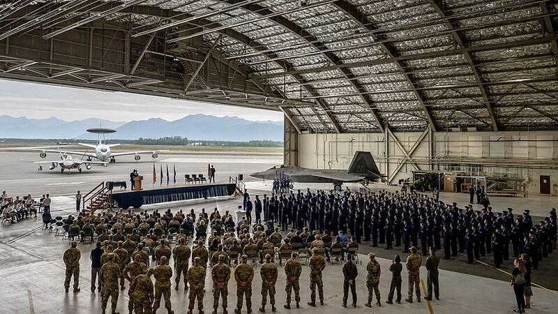

Joint Base Elmendorf-Richardson Alaska Alaska · Military base · 61.250°N, 149.811°W A 3rd Wing ceremony in a hangar at Joint Base Elmendorf-Richardson, 2022. Photo: Airman 1st Class Andrew Britten, U.S. Air Force, Public domain (source) Largest military installation in Alaska. Open in the interactive Watcher